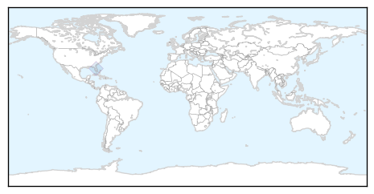

Unknown
30-Day Web Trend
0 alerts, 0 warnings

30-Day Twitter Trend
0 alerts, 0 warnings

Article Locations

Article Confidences

Top Articles:
- 0.996
- Foreigner with MERS in Philippines now free of the virus
- 0.992
- Govt gears up to battle disease
- 0.979
- Korean cardinal praises medics’ courage in face of Mers outbreak
- 0.967
- A 'hidden epidemic' in the US has ballooned into a public-health fiasco — and no solutions are in sight
- 0.967
- Bird flu is back and experts want a 50km zone across the whole North West to prevent it spreading
- 0.950
- More reasons to watch for ticks
- 0.942
- Camden GP calls for people to get flu shots
- 0.935
- Culling at UK farm after 'highly pathogenic' bird flu case confirmed
- 0.934
- High Plains Journal: Jennifer Carrico
- 0.932
- Culling at farm after bird flu case
- 0.917
- Chicago Tribune
- 0.917
- Chicago Tribune
- 0.917
- Chicago Tribune
- 0.917
- Chicago Tribune
- 0.917
- Chicago Tribune
- 0.917
- Chicago Tribune
- 0.917
- Chicago Tribune
- 0.917
- Chicago Tribune
- 0.917
- Chicago Tribune
- 0.917
- Chicago Tribune
- 0.917
- Chicago Tribune
- 0.917
- Chicago Tribune
- 0.917
- Chicago Tribune
- 0.917
- Chicago Tribune
- 0.917
- Chicago Tribune
- 0.917
- Chicago Tribune
- 0.917
- Chicago Tribune
- 0.917
- Chicago Tribune
- 0.917
- Chicago Tribune
- 0.917
- Chicago Tribune
- 0.898
- Divide the health and welfare dept.-INSIDE Korea JoongAng Daily
- 0.857
- 170,000 chickens culled to stop bird flu outbreak
- 0.840
- CALIFORNIA children attacked by COYOTES in four separate incidents ~ MASSACHUSETTS woman is one of the first to be diagnosed with MIYAMOTOI ~ TEXAS confirms first human HANTAVIRUS case of 2015 ~ What
- 0.823
- Bird Flu Confirmed At Farm In Lancashire: A History Of The Disease In The UK
- 0.820
- South Korea's MERS crisis may come to an end next month
- 0.783
- Thailand’s Deep South steps up prevention against MERS
- 0.778
- Warmer temperatures spread malaria into higher elevations, study finds -
- 0.754
- TB test results from New Mexico announced
- 0.747
- Two die of JE in Siliguri
- 0.738
- Deadly bee disease crippling bee-farming industry
- 0.731
- State unveils plan to promote vaccinations against HPV
- 0.730
- Avian Influenza case confirmed as H7N7
- 0.717
- Bladder cancer in Nigeria: Why snails matter (1)
- 0.703
- Sierra Leone: IOM Sierra Leone Ebola Response Situation Report Issue 32
- 0.695
- EU koploper bij inzet van middelen voor duurzame ontwikkeling
- 0.693
- Countries, beware: Climbing up the income ladder can seriously damage your health!
- 0.645
- Philippines food poisoning cases spark calls for expert panel
- 0.614
- Opinion I feel a bit sick, should I stay home or go to work?
- 0.614
- Elective Surgery Is Associated with Lower Risk of Death than Drugs for Ulcerative Colitis Treatment
- 0.597
- Iran says bird flu contained
Showing top 50 articles...
Top Tweets:
-
No tweets found for Jul 13, 2015
Chikungunya
30-Day Web Trend
30-Day Twitter Trend
Article Locations
Article Confidences

Top Articles:
-
No articles found for Jul 13, 2015
Top Tweets:
- 0.546
- RT: NEWS SCAN: Saudi MERS cases; H5N6 case in China; Chicken entree Salmonella recall expanded; New chikungunya cases http://t.…